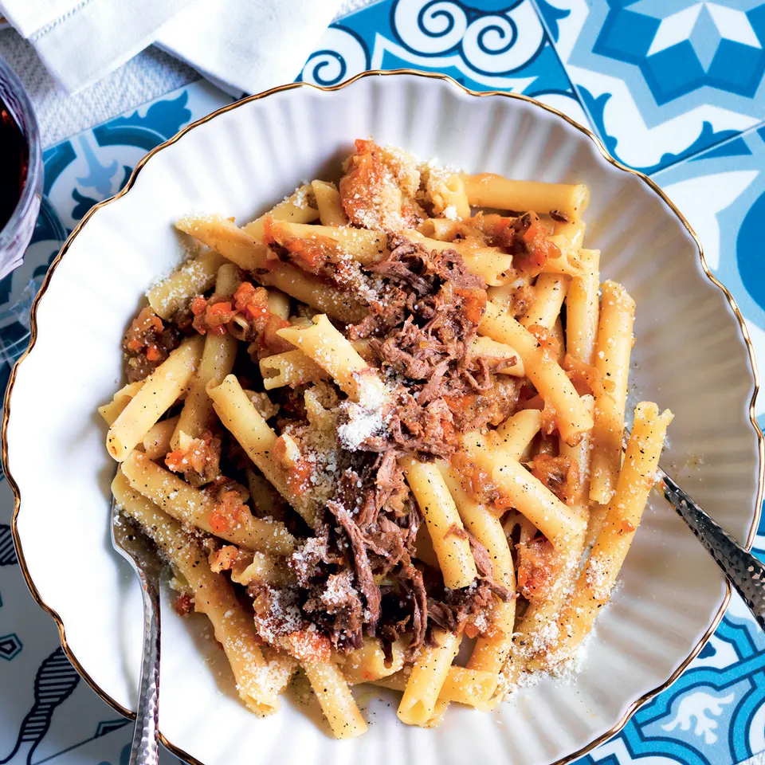

Pasta alla genovese, la ricetta napoletana

Si chiama genovese, ma in realtà è una ricetta della tradizione napoletana. Ecco la ricetta per preparare questo saporito ragù bianco con cui condire la pasta
Ingredienti
- 1 Kg cipolle dorate
- 800 g polpa di manzo
- 320 g ziti
- 100 g vino bianco secco
- 60 g sedano
- 60 g carote
- alloro
- prezzemolo
- Parmiggiano Reggiano Dop o caciocavallo
- olio extravergine di oliva
- sale
- pepe nero
Procedimento
- Per la ricetta della pasta alla genovese, la ricetta napoletana, tagliate le cipolle sottili, tritate sedano e carota per il soffritto, conservando le foglie del sedano per il mazzetto aromatico. Cuocete sedano, carote e cipolle con 2 cucchiai di olio. Dopo 8 minuti aggiungete un pizzico di sale e il mazzetto preparato con le foglie del sedano, un ciuffo di prezzemolo e 1 foglia di alloro, legati con lo spago.
- Tagliate la carne a pezzi e unitela alle verdure, rosolatela per 2 minuti e poi lasciate cuocere il tutto per 2 ore, le cipolle rilasceranno la loro acqua e non servirà aggiungerne. Passate le 2 ore aggiungete il vino e cuocete ancora per 1 ora. Alla fine sfilacciate la carne che sarà morbidissima. Metà carne utilizzatela per condire la pasta e l'altra metà per il panino.
- Spezzate gli ziti in tre, non troppo corti ma neanche lunghi, cuocete la pasta in abbondante acqua salata, scolatela e versatela in padella, nel sugo di cipolle. Mescolate bene e distribuite la pasta nei piatti, quindi completate con la carne sfilacciata, formaggio grattugiato e pepe.
Home